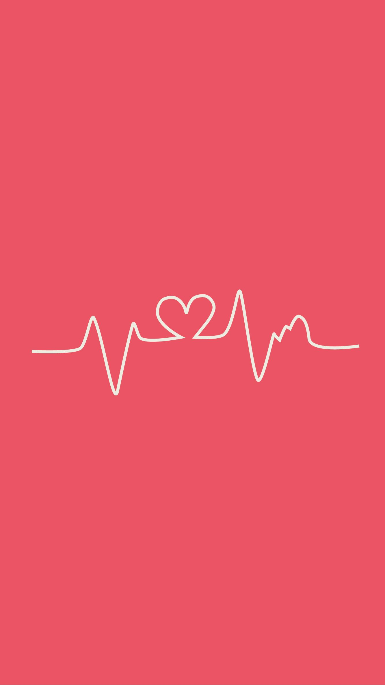

<ion-header>
  <ion-toolbar>
    <ion-buttons slot="start">
      <ion-menu-button></ion-menu-button>
    </ion-buttons>
    <ion-title>INICIO</ion-title>
  </ion-toolbar>
</ion-header>

<ion-content>

  

  <ion-card>

    <div style="padding-left: 20%; padding-right: 50%; margin-top: 20px;">
      
      <ion-avatar style="border-radius: 50%; height:10rem; width:10rem;">
        
      </ion-avatar>

    </div>


    <ion-card-header>
      <ion-card-subtitle>pulsaciones</ion-card-subtitle>
      <ion-card-title>PULSACIONES API</ion-card-title>
    </ion-card-header>
    <ion-card-content>
      una aplicacion que te permitira el calculo de pulsaciones y un historial de las mismas, ademas de saber las que tienes actualmente
    </ion-card-content>
  </ion-card>

</ion-content>
